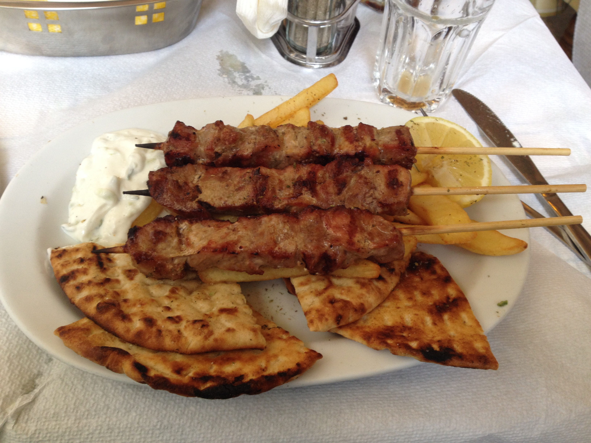

Souvlaki

Souvlaki is the Greek's favorite fast food, it is meat on a skewer!
- Pitta Bread
- Oregano
- Yogurt
- Garlic
- Tomato
- Chicken Skewer
- Olive Oil
- Chop up garlic finely
- Add chopped up garlic into yogurt and add a bit of olive oil
- Mix till the tzatziki is complete
- Cover pitta bread & chicken skewer with olive oil
- Cook the pitta bread and chicken skewer over grill on medium heat
- Chop up tomato and pull oregano from the thread
- Take skewer and pitta off the grill and put some tzatziki onto the pitta
- Put the skewer in the middle of the pitta, put tomato, close it up and then pull the skewer out